Activity: Personal Measures
Here is a clever thing you can do:
Measure Yourself!
Measure how wide your hand is, how long your arm is, the width of your fingernails and more!
Then as you are walking around you can measure other things using your body.
The Activity
You will need:
- A ruler (for smaller measures)
- A tape measure (for larger measures)
- A measuring cup (optional)
- Pen and paper
- Yourself!
Measure using millimeters (mm) or inches (in). Try to do both if you can.
| mm | inches | ||
| 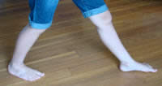 | 1 large step | ||
| 1 pace (= 2 normal steps) | 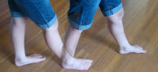 | ||
| 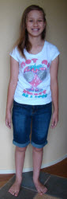 | your height | ||
| end of thumb | 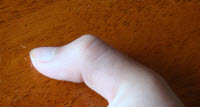 | ||
| 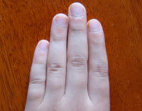 | across 4 fingers together | ||
| handspan (finger to thumb) | 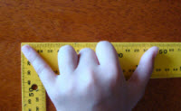 | ||
| 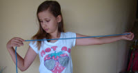 | arm to opposite shoulder | ||
| fingernail width | 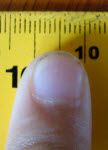 | ||
| 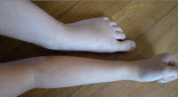 | length of foot |
||
| length of forearm (elbow to wrist) |
|||
| between two biggest knuckles | 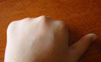 | ||
| 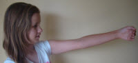 | nose to outstretched hand |
Put a copy of this on your wall!
If you are still growing, remember to redo this in a year or two.
Favorites
Choose 4 of those measures to be your "favorites", the ones you find easiest to remember. Include at least a small, a medium and a large one.
| Personal Measure | Length |
Using The Measures
Now you get to use them!
Measure each of the following, first using your "Personal Measures", then using a ruler or tape measure to see how close you get!
| Item | Estimate using a Personal Measure |
Actual using a ruler or tape measure |
| Paperclip (width) | 3 fingernails = 30mm | 32 mm |
| Teaspoon (length) | ||
| Fork (length) | ||
| Pencil (length) | ||
| Chair seat (height) | ||
| Chair back (height) | ||
| Table (width) | ||
| Table (length) | ||
| Table (height) | ||
| Door (width) | ||
| Door (height) | ||
| Car (width) | ||
| Car (length) | ||
| Car (height) | ||
| Hallway (width) | ||
| Hallway (length) | ||
| Hallway (height) |
Volume (Optional)
You can also use your hands to measure volume, like this:
| ml | fluid ounces | ||
| 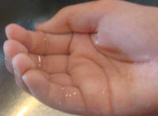 | water in the palm of your hand |
||
| water in two cupped hands | 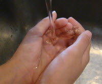 |
| 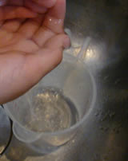 | How To MeasureDo this measurement in the sink. When you have filled your hand (or hands) Do this (say) 5 times, see how much is in the cup, |
You can also try this using rice:

I got 40 ml for one handful of rice